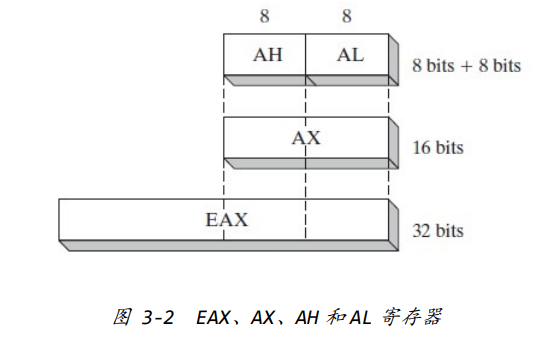
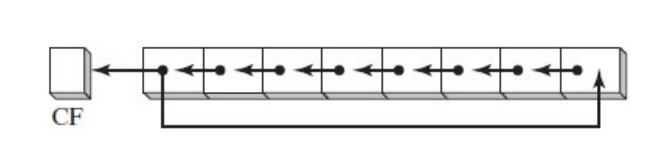
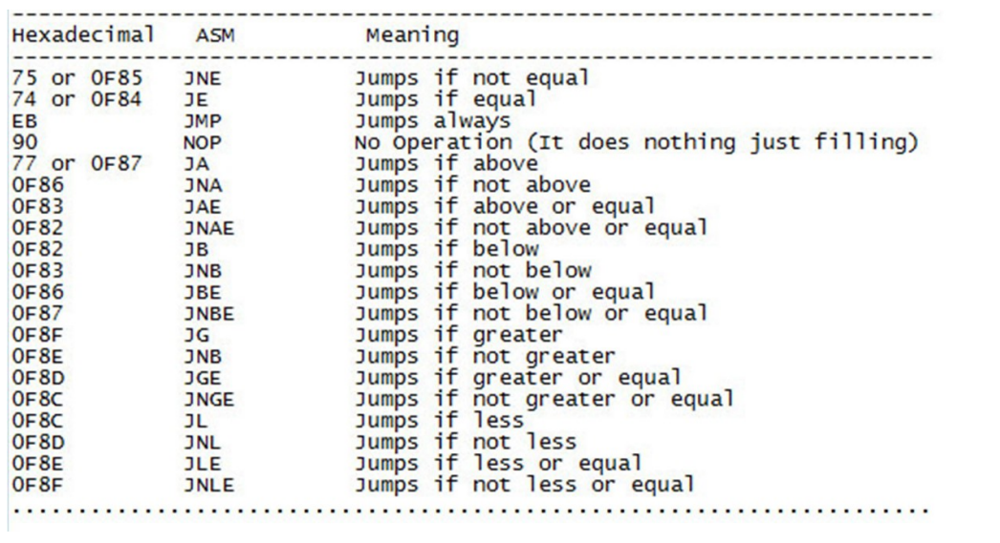

CPU 寄存器以及数据传输指令
寄存器
EAX、ECX、EDX、EBX、ESP、EBP、ESI、EDI 和 EIP
- EAX (accumulator，累加器)
- EBX (Base index，基址寄存器)
- ECX (counter，计数器)
- EDX (data)：EDX 通常用于存储乘积的部分位数以及除法的余数，同时也 能存储起始内存地址。
- EBP (base pointer)：EBP 指向一个内存地址，主要作为一个函数中的参 数以及变量的基址。
- EDI (destination index)：EDI 常用于字符串指令，指向目标字符串。
- ESI (source index)：ESI 常用于字符串指令，指向初始字符串。
- EIP：存储即将执行的下一条指令的地址。
- ESP：存储栈顶地址。
还有16 位和 8位寄存器，作为 32位和 16 位寄存器的一部分。AX 就是最
后 16 位，AH 是 AX 的前面 8 位，AL 是 AX 的后八位。

最基本的是 BYTE占用1个字节（8 bit）内 存，WORD 占用 2 个字节（16 bit）内存，DWORD 占用 4 个字节（32bit）内存、 QWORD 占用 8 个字节（64 bit）内存。
数据传输指令
-
数据传输指令 MOV：将其始操作单元（src）的内容复制到目标单元（dest）。
MOV dest src
(“OFFSET”这个词说明传递的是内存地址而不是内存地址上的值。)
-
XCHG A, B指令将A与B的值互换
-
push 压栈
- IDA发现的函数在调用前一般需要传递参数，大部分是通过PUSH指令（仅指32位）。PUSH指令将这些值存放到栈上，这些值被称为函数参数。
-
pop 出栈
-
LEA 即 LOAD EFFECTIVE ADDRESS。“LEA A, B”指令将 B 的地址传递给 A。该指令不会获取B存储的内容，只会传递地址或者后一个操作数的运算结果（外加中括号）。这种方法普遍运用于获取变量参数的地址
- 所以，LEA EAX,[EBP - 0C]将 EBP-0C 计算的结果也就是这个局部变量的地址传给 EAX。而 MOV EAX, [EBP - 0C]除了计算 EBP - 0C 表达式结果得到变量地址外，之后还会读取该地址上存储的值并将其传给EAX。
整数运算与逻辑运算指令
整数运算
- ADD A，B指令将B 的值与A 相加，并将结果保存到 A
- SUB A,B 这个指令和ADD 指令一致，只不过它是对两个操作数相减，最后
结果保存到A。SUB允许的操作数组合和ADD是一样的。 - INC A 和 DEC A指令对一个寄存器或者内存值±1。这是加减操作的一个
特例。一般这两个指令用来对计数器±1。 - IMUL 是带符号整数乘法指令，这里介绍两种使用方式。IMUL A,B 和 IMUL A,B,C。第一种对A和B相乘，结果返回给A。第二种方式对B和C相乘，将结果返回给A。
- 在这两种方式下，A只能是一个寄存器，B可以是寄存器或者内存值（第一种方式下可以是常数），而C只能是个常数。
- IDIV A指令中，仅仅指定了除法的除数。被除数没有指定，因为存放的地
方是固定的。- 在 32 位运算中，EDX 和 EAX 组成一个 64 位数，EDX 在高位，EAX 在低位。这个64位数除以A后，商返回给EAX，余数返回给EDX。
逻辑运算
-
AND A,B 对 A 和 B 进行与运算，将最终结果保存到 A。对于 OR 和 XOR 运算也是一样的。指令对2个操作数进行运算，结果保存到A。每一种运算都有一个真值表。
- A和B可以是寄存器或者内存值，但同一条指令中A和B都是内存值是不允许的。
-
NOT A将A 所有的位取反然后保存到A。Python 中按位取反是“~”符号。 对于0101，结果会对每一位取反。所有的0反转为1，1反转为0。
-
NEG A将A转变成-A。NEG运算和按位取反不一样，按位取反多减了1。（相当于按位取反后加1）
-
SHL A,B；SHR A,B 中 A 是一个寄存器或内存值，B 是一个常数或者一个 8
位寄存器。这两个指令将操作数按位向左或向右偏移，缺少的位用0来填补。 -
还有2个类似的指令ROL和ROR，指令会将每个比特偏移一定的位置，但是
一端超出的字节会重新返回给另一端。指令只对每个比特进行了偏移但不改变内容
流程控制指令
无条件跳转指令
- JMP A指令当中，A是程序作者期望的无条件转向的一个内存地址。
- 跳转距离的计算方式：终点指令起始地址 - 起点指令起始地址 – 5
- 5是跳转指令的字节数，结果是0x300也就是长跳转指令操作码E9后面的dword。
- JMP SHORT 指令是一个两字节的短程跳转指令，只能向前或者往回跳转。
- 第一个字节EB是跳转操作码（OPCODE）。跳转的方向由第二个字节的值确定。
- 这种跳转是有距离限制的。
有条件跳转指令
-
CMP A,B 对A 和B 进行比较，根据比较的结果程序将会进行某些操
作，如果是另一种结果则进行不同的操作。一般来说，比较会改变标志寄存器EFLAGS的状态，根据这个状态条件跳转指令会决定接下来如何执行。- 如果比较触发标志寄存器 EFLAGS中的Z或者说Zero标记，将执行跳转。在之前的例子中，如果EAX和EBX 相等 将执行跳转。CMP指令类似于SUB指令，只不过不保存计算结果。

-
CALL指令用来调用一个函数。RET指令用来返回调用这个函数的指令的下
面一条指令处。
静态分析入门
读 READ®、写 WRITE(W)以及执行 EXECUTION(X)D 和 L 两列分别对应于 DEBUGGER（调试器）和 LOADER（加载器）
更新时间：2024-01-09 20:36
转载请注明来源，欢迎指出任何有错误或不够清晰的表达本文链接：https://czruby.github.io/2024/01/09/耍一耍逆向/